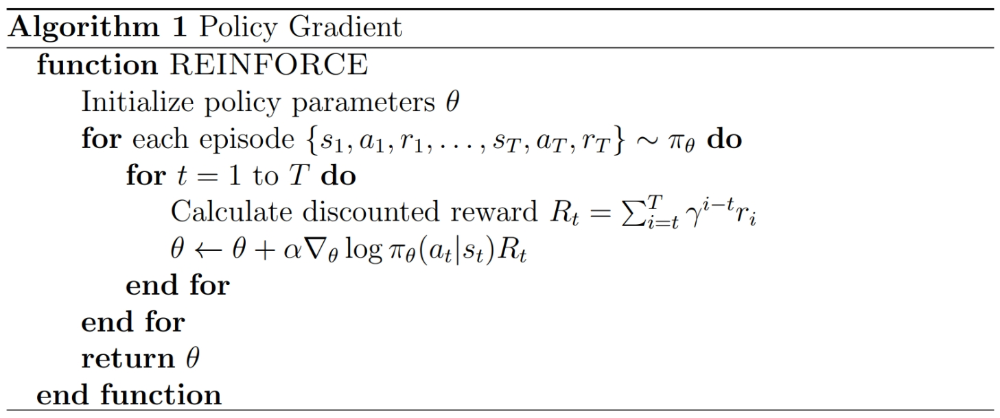
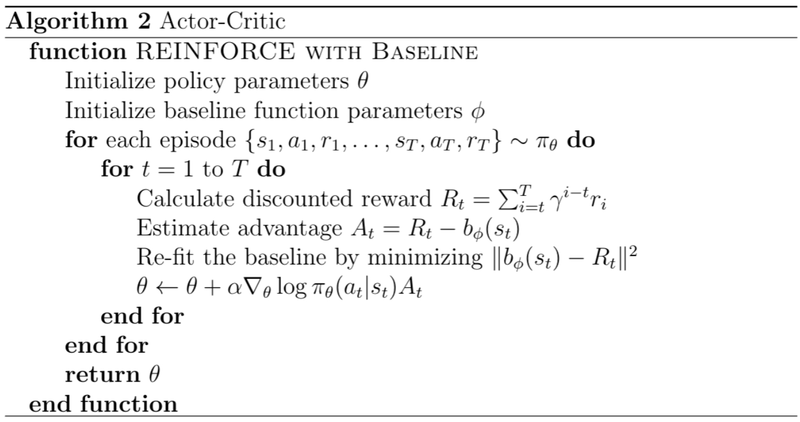

基于强化学习的小游戏实现¶
本大作业旨在让大家动手实现并测试深度强化学习算法，在经典的 Lunar Lander 环境中进行实验。文档将详细介绍任务要求、算法设计规范、实验实施要求、提交要求及注意事项。
1. 任务说明¶
本次作业的主要目标是要求大家实现以下两类强化学习算法：
- Policy Gradient (策略梯度)
-
基础实现，要求大家利用策略梯度方法来获得基础成绩。
-
Actor-Critic (演员-评论家)
- 要求独立实现此算法以争取更高分数。
环境选用 OpenAI Gym 的 Lunar Lander-v2。任务中要求对状态、动作和奖励进行合理设计与处理，并且正确计算折扣奖励。例如，在策略梯度中，每个时刻的累计回报计算公式为：
R₁ = r₁ + γ·r₂ + γ²·r₃
R₂ = r₂ + γ·r₃
R₃ = r₃
(其中 γ = 0.99)
2. 方法设计规范¶
需实现至少两种强化学习算法并进行对比
- Policy Gradient
-
算法流程图：

-
Actor-Critic (演员-评论家)
-
算法流程图：

-
其他先进的RL算法
- 例如REINFORCE、Q Actor-Critic、A2C、A3C 等
为确保大家的代码具有良好的可读性和扩展性，请注意以下设计规范：
- 代码结构规范：
- 模块化设计，各个功能封装为独立的函数或类。
- 注释要清晰，特别是在关键算法部分（如策略更新、值函数估计）的逻辑和参数含义。
3. 实验实施要求¶
- 实验平台建议：
- 推荐使用pytorch框架和openai gym环境进行实验。
-
注意：如使用其他环境，请自行确保代码结果可复现。
-
实验时间限制：
-
请确保实验训练过程能在30分钟内完成。
-
评估指标：
-
累计奖励 (Episode Reward)：每个 episode 的总奖励值。
-
平均奖励 (Average Reward)：在若干 episode 上的平均奖励，用于反映整体性能。
-
成功率 (Success Rate)：达到任务成功状态（例如安全着陆）的比例。
-
收敛速度 (Convergence Speed)：达到预设奖励标准所需的 episode 数目。
-
奖励标准差 (Reward Std)：奖励分布的离散程度，反映算法稳定性。
4. 提交要求¶
作业需要按照下列要求提交对应的文件和报告：
- Python代码文件（30%）：
-
完整能运行的代码，包括Policy Gradient与进阶算法的实现。
-
实验报告（70%）：
-
报告需要包括如下内容：
- 你所选择并实现的进阶RL算法，对比基础Policy Gradient方法的不同之处；
- 对你算法实现细节的详细描述；
- 你所实现的算法在5种评估指标下的性能；
- 阅读 InstructGPT 论文，回答以下问题：
- 在RL训练中，“PPO-ptx”与“PPO”的目标函数的区别是什么？
- 相比于“PPO”，使用“PPO-ptx”的潜在优势是什么？
- 请从目标函数的角度，对“PPO-ptx”与“PPO”算法进行详细分析。
-
截止日期：
-
以课程网站上的日期为准
-
参考资料与链接：
- OpenAI Gym - LunarLander-v2
- InstructGPT 论文
希望大家通过本次大作业能对强化学习算法有更深入的理解，期待你们出色的实现和创新！
如有疑问，欢迎随时在讨论qq群提问或发送邮件至554872480@qq.com。
Happy Reinforcement Learning!